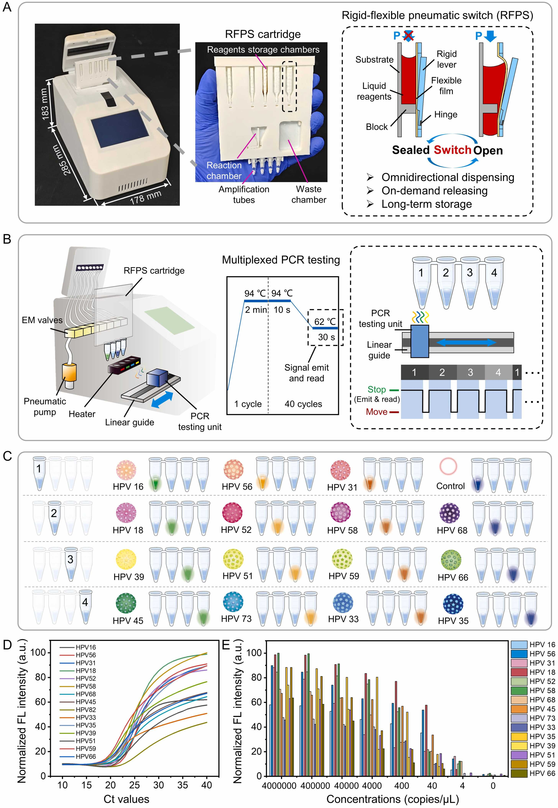

Automated microfluidic MOF synthesis
I developed a microfluidic platform that controls ammonia delivery during continuous synthesis of Ni₃(HITP)₂, allowing the system to produce different particle morphologies.
Small Methods · 2026
MICROSYSTEMS / BIOLOGY / ENGINEERING
Engineering microsystems for biology.
I develop microfluidic platforms and biointerfaces for controlled experiments, biological measurement, and integrated diagnostics.
01 / FIRST-AUTHOR WORK
I developed a microfluidic platform that controls ammonia delivery during continuous synthesis of Ni₃(HITP)₂, allowing the system to produce different particle morphologies.
Small Methods · 2026

We combined automated reagent handling and multiplexed qPCR in a portable device that distinguishes fifteen HPV genotypes.
Sensors and Actuators B: Chemical · 2026
02 / APPROACH
My work connects microfabrication, microfluidic transport, mechanical analysis and biological assays across interdisciplinary collaborations.
About my work →